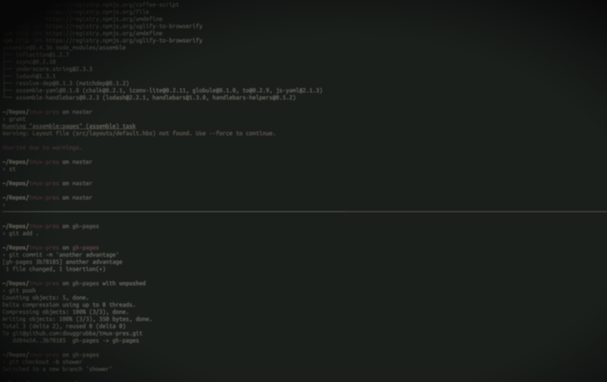

Doug Grubba (@douggrubba) - Visual Chefs
Split the screen, like in your text editor.
Open multiple tabs like your browser.
< brew install tmux
Install on windows with cygwin.
< tmux
You now have your first "session"
"sessions" are like "tabs" in the browser
<control + b> + $
| Horizontally | Horizontally |
<control + b> + " |
<control + b> + $ |
<control + b> arrows
<control + b> x, y
| Next pane | <control + b> + n |
| Prev pane | <control + b> + p |
| Rotate panes | <control + b> + <control + o> |
| Toggle layouts | <control + b> + spacebar |
You are were plugging right along on your main project, but now you were asked to help out on something else.
Should you close out everything you are working on?
All is not lost, remember sessions?
<control + b> + :new
tmux is made for consultants
Time to return to your first project.
<control + b> + s
Every day we change gears to finish our tasks on various projects.
Stop losing time and momentum, by switching your focus.
Doug Grubba @douggrubba
Visual Chefs